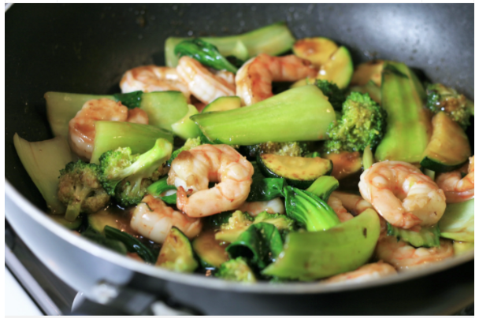

StirFry Recipe

Teriyaki Shrimp and Vegetable Stir-Fry
Shrimp, bok choy, broccoli, and zucchini are happy together in a stir-fry that makes its own teriyaki sauce.
Serve over rice or noodles for a tasty meal.
List of Ingredients
- 2 heads baby bok choy
- 2 tablespoons vegetable oil
- ½ pound uncooked medium shrimp, peeled and deveined
- 1 cup broccoli florets
- 2 tablespoons soy sauce
Steps
- Slice the stem ends of the bok choy off to separate the leaves. Wash and drain the leaves; discard the ends. Cut the leafy green part of the leaves from the white part, keeping both parts separated.
- Heat a large skillet or wok over high heat; add oil. Cook and stir ginger in the hot oil for 1 minute. Add shrimp and continue cooking until they are bright pink and opaque, reducing heat as necessary to prevent burning, 2 to 3 minutes.
- Stir white pieces of bok choy, broccoli, zucchini, soy sauce, vermouth, brown sugar, and rice vinegar into the skillet. Cover and continue cooking until bok choy begins to soften, 4 to 5 minutes.